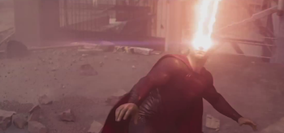

Superman

Who am I?
I am a superhero who appears in American comic books published by DC Comics. I was born on the fictional planet Krypton and was named Kal-El, before my adopting parents on Earth named me Clark Kent.
How I can (or can't) help you:
- Moving apartments and your sofa is too heavy? - Give me a call, I am very strong!
- Someone broke into your house? - Call the police, not me. I don't support vigilantism.
- Want to be like me? - Get in contact and order my sick merchandise. Limited stock only! (P.S. red capes are not included in your order. Buy one separately at a Superman™ physical store near you.)
Where can you find me?
- Wikipedia
- Fandom

The image above 👆 is a thumbnail!
My super abilities:
| Ability |
Strength/Usefulness (1-10) |
Cost/Sacrifice |
| Eye laser |
10 |
I become temporarily blind for least 3 days. |
| Flying |
10 |
I can sometimes come in contact with airplanes
(might have caused a few crashes...). |
| Bulletproof skin |
8 |
Sounds cool but it just feels very itchy to be honest. |
By: Muhammad Umar Shakeel
Last modified on: 21 February 2023